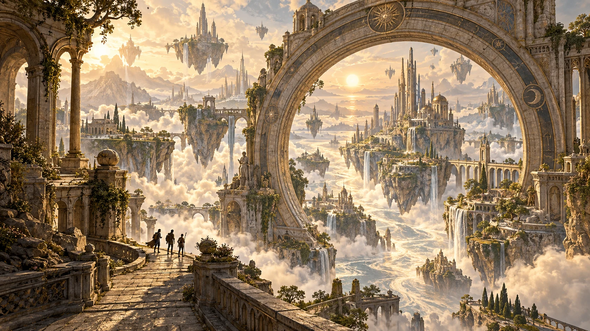

Wander · Discover · Connect
The Infinite Garden
A thousand paths. No ordinary destination.
Discover your next virtual world
Find a place that moves you.
Bring the people who make it matter.

Your next somewhere
Walk beyond the familiar.
Follow your curiosity
6 worlds to explore.
Wander · Discover · Connect
A thousand paths. No ordinary destination.
Stargaze · Wonder · Connect
A place to feel small. And think infinitely.
Wander · Unwind · Reconnect
Take the long way. Find a little stillness.
Pause · Reflect · Belong
Let the conversation follow its own tide.
Listen · Feel · Gather
Some music deserves a world of its own.
Watch · Imagine · Share
When the lights go down, a world opens.
No worlds match that search. Try another word or choose All worlds.
A first collection of world concepts. Immersive worlds and multiplayer exploration are in development.
Good company changes everything
Places worth returning to
Save a world that catches your imagination. You’ll find it here whenever you return to this browser.